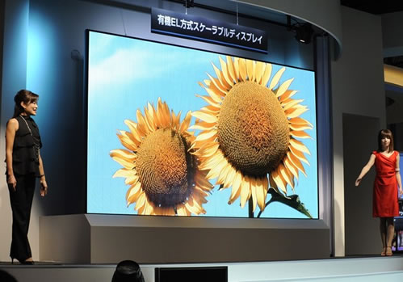

PANTALLA OLED DE 155 PULGADAS
La compañía Mitsubishi presentó su pantalla OLED de 155 pulgadas, demostrando que es posible construir pantallas de cualquier dimensión utilizando pequeños paneles OLED de 10 x 10 centímetros.
Lo que falta ahora es lograr alargar la vida útil de estos paneles, calculada en unas 20.000 horas y que corresponde a unos 2 años si el monitor esta encendido las 24 horas del día
Hasta ahora el desarrollo de las pantallas OLED se ha visto retrasado por su alto precio y por lo complejo que resulta fabricar pantallas con mayores dimensiones que las actuales.
